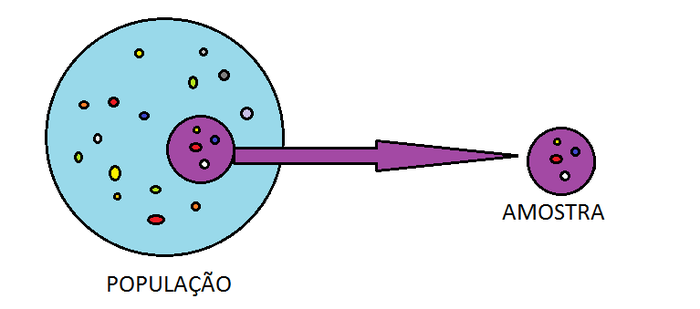
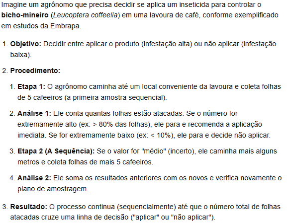
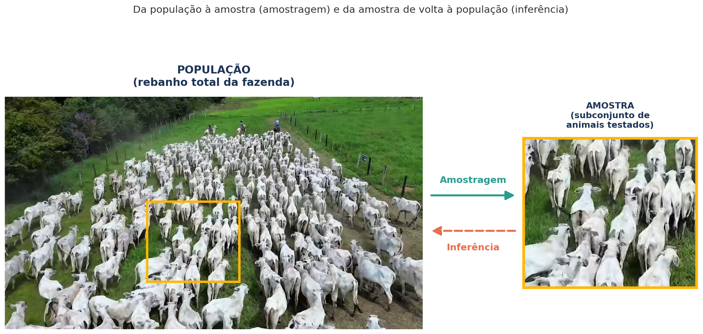

Amostragem e Estimação
Introdução
Este material cobre as Semanas 7 e 8 do plano de ensino: revisão de amostra vs. população, amostragem aleatória simples (randomização), amostragem não aleatória (conveniência, intencional, sequencial e por cotas), introdução à estimação (estimadores, estimativas e parâmetros), estimação por ponto e por intervalo, e intervalo de confiança para a média e para proporção.
Slides originais disponíveis AQUI.
Alguns materiais desta seção são inspirados em Pedro A. Barbetta, Estatística Aplicada às Ciências Sociais, 6ª ed., Editora da UFSC, 2006.
Amostra vs. população: relembrando
- População: conjunto total de indivíduos ou observações de interesse.
- Amostra: subconjunto representativo (ou não) da população.
A intuição de sempre: “um chef de cozinha prova seu prato com uma colherada antes de servir toda a panela”. Exemplo de população: todo o rebanho bovino de uma fazenda. Exemplo de amostra: 30 animais selecionados para avaliação. O estudo de como selecionar essa amostra — a amostragem — faz parte da Inferência Estatística, e é o assunto central desta seção.

Censo vs. amostragem
- Censo: estudo através da observação de todos os elementos da população.
- Amostragem: estudo por meio da observação de uma amostra (processo de seleção da amostra).
Por que fazer amostragem? Economia; menor tempo; maior qualidade nos dados levantados (é mais fácil garantir qualidade em uma amostra pequena do que em uma população inteira); a população pode ser infinita (ou impossível de acessar por completo); e, de modo geral, é mais fácil obter resultados satisfatórios com uma amostra bem planejada.
Quando fazer censo? Quando a população é pequena (o tamanho da amostra ficaria muito próximo do da população); quando se exige o resultado exato; ou quando já se dispõe dos dados de toda a população (por exemplo, registros administrativos completos).
Técnicas de Amostragem
Existem duas grandes famílias de técnicas de amostragem:
- Amostragem probabilística (aleatória): a probabilidade de um elemento da população ser escolhido é conhecida. Usa alguma forma de sorteio (aleatoriedade).
- Amostragem não-probabilística (não-aleatória): não se conhece, a priori, a probabilidade de um elemento da população vir a pertencer à amostra.
Amostragem Aleatória Simples (AAS)
É a técnica mais comum e “desejável” de amostragem probabilística. Faz-se uma lista da população e sorteiam-se os elementos que farão parte da amostra (pode-se utilizar uma tabela de números aleatórios). Propriedade básica: cada subconjunto da população com o mesmo número de elementos tem a mesma chance de ser incluído na amostra — em particular, cada elemento da população tem probabilidade \(p = n/N\) de pertencer à amostra. Um exemplo popular de AAS: os 6 números sorteados na Mega-Sena são uma amostragem aleatória simples das 60 dezenas.
Exemplo: suponha que você tenha \(N=100\) vacas e sorteie aleatoriamente \(n=10\) vacas, onde todas têm a mesma probabilidade de serem sorteadas (\(p = 10/100 = 10\%\) cada).
A AAS é frequentemente considerada o “padrão ouro” para reduzir o viés de seleção e garantir que todos os membros de uma população tenham chances iguais de serem escolhidos. No entanto, nem sempre é a “melhor” técnica em todos os cenários, pois sua eficácia depende muito do tamanho da população, da homogeneidade dos elementos e dos recursos disponíveis para realizar o sorteio.
Amostragem não-probabilística: conveniência
Técnica de pesquisa em que a seleção dos elementos da amostra (plantas, animais, solos, etc.) é feita com base na facilidade de acesso, proximidade ou disponibilidade imediata para o pesquisador, e não por sorteio aleatório. Pode conter vieses em suas estimativas — um viés é um erro sistemático (constante) que faz com que uma estimativa seja sempre maior ou sempre menor do que o valor real que se quer descobrir.
Amostragem não-probabilística: intencional
Técnica em que o pesquisador escolhe propositalmente os elementos da amostra com base em seu próprio conhecimento, julgamento profissional ou em critérios específicos, acreditando que esses elementos fornecerão as informações mais relevantes para o estudo. Tem alta suscetibilidade a vieses — pode não representar a média da população, pois ignora casos “típicos” ou ruins, focando apenas no que o pesquisador quer investigar. Como vantagem, é rápida e barata.
Exemplo: imagine uma pesquisadora que quer saber a qualidade do café de uma fazenda de 100 hectares. Ela não vai querer colher um fruto de cada árvore ao acaso — ela vai diretamente às árvores que estão mais maduras e com os melhores frutos, porque seu objetivo é avaliar a qualidade máxima da colheita atual. Ela intencionalmente escolheu o que melhor representava o seu objetivo (mas essa amostra não deve ser usada, por exemplo, para estimar a qualidade média de toda a colheita).
Amostragem não-probabilística: sequencial
Técnica em que o pesquisador escolhe a amostra em sequência, e o tamanho da amostra (\(n\)) não é definido previamente. Suponha que você está testando a qualidade de produtos em uma linha de montagem: pega-se um produto, verifica-se, depois pega-se outro e verifica-se, continuando esse processo um por um até ter certeza se o lote é bom ou ruim.
Características: a amostra é coletada em etapas — após cada item (ou grupo) coletado, analisa-se o dado para decidir “já sei o suficiente para concluir?” ou “preciso de mais amostras?”. O tamanho final não é fixo, permitindo parar assim que os resultados se tornarem conclusivos, economizando tempo e recursos.
Exemplo aplicado — controle de pragas:

Imagine um agrônomo que precisa decidir se aplica um inseticida para controlar o bicho-mineiro (Leucoptera coffeella) em uma lavoura de café, conforme exemplificado em estudos da Embrapa:
- Objetivo: decidir entre aplicar o produto (infestação alta) ou não aplicar (infestação baixa).
- Etapa 1: o agrônomo caminha até um local conveniente da lavoura e coleta folhas de 5 cafeeiros (a primeira amostra sequencial).
- Análise 1: conta quantas folhas estão atacadas. Se o número for extremamente alto (ex.: > 80% das folhas), ele para e recomenda a aplicação imediata; se for extremamente baixo (ex.: < 10%), ele para e decide não aplicar.
- Etapa 2 (a sequência): se o valor for “médio” (incerto), ele caminha mais alguns metros e coleta folhas de mais 5 cafeeiros, somando os resultados anteriores com os novos.
- Resultado: o processo continua sequencialmente até que o número total de folhas atacadas cruze uma linha de decisão (“aplicar” ou “não aplicar”).
Amostragem não-probabilística: por cotas
Etapas: classificar a população, determinar a proporção da população para cada classe, e fixar cotas em observância à proporção das classes consideradas. É utilizada quando não existe um cadastro da população que possibilite o sorteio necessário para a amostragem aleatória, mas, ao mesmo tempo, existe informação suficiente sobre o perfil populacional (por exemplo, dados de um Censo do IBGE anterior). É um método considerado não-probabilístico, muito comum em pesquisa eleitoral e de mercado — por exemplo, entrevistar 75% de adultos e 25% de idosos, se essa for a proporção conhecida da população. Material complementar: Amostragem por Cotas (UFPB).
Tamanho da amostra (\(n\)) e tamanho da população (\(N\))
Uma pergunta recorrente ao planejar um estudo: quão grande a amostra \(n\) precisa ser, dado o tamanho da população \(N\) (ou mesmo quando \(N\) é desconhecido/infinito)? O tamanho de amostra necessário depende, entre outros fatores, da variabilidade da característica de interesse na população, da margem de erro tolerada e do nível de confiança desejado — assunto que será formalizado a seguir, no cálculo do intervalo de confiança.
Introdução à Estimação
Retomando o exemplo motivacional já visto na Semana 1-2: população é o rebanho total de vacas de uma fazenda, e a característica \(X\) observável é, por exemplo, “tem a doença da vaca louca? Sim ou não”. O ciclo população → amostragem → amostra → inferência se aplica aqui de forma direta.
- População: é o conjunto de elementos para os quais desejamos que as conclusões da pesquisa sejam válidas, com a restrição de que esses elementos possam ser observados ou mensurados sob as mesmas condições. Muitas vezes chamamos de “população” todo o conjunto de observações da variável de interesse.
- Parâmetro: medida que descreve certa característica dos elementos da população (uma média, uma proporção, etc.). Por exemplo, a proporção verdadeira de vacas com a doença da vaca louca em todo o rebanho.
- Amostra: parte dos elementos de uma população (ou parte das possíveis observações de uma variável de interesse).
- Amostragem: o processo de seleção da amostra.
- Estimativa: valor calculado com base na amostra, usado com a finalidade de avaliar aproximadamente um parâmetro.
Esquematicamente: a partir da população, fazemos uma amostragem que resulta em uma amostra (por exemplo, o “teste da vaca louca” aplicado a \(x_1, x_2, x_3, \dots\) animais, com resultados “tem”/“não tem”). Dessa amostra calculamos uma estatística/estimativa \(\hat{p}\), que aproxima o parâmetro populacional \(p\) desconhecido. O resultado é reportado como:
\[ p = \hat{p} \pm \text{Erro Amostral} \]
Estimação de parâmetros
Como os estimadores dependem da amostra aleatória sorteada, eles também são considerados variáveis aleatórias. Logo, é importante avaliar como eles se comportariam caso tivéssemos obtido diferentes amostras da mesma população — esse estudo é chamado de distribuição amostral dos estimadores, e é a base teórica que permite construir intervalos de confiança (a incerteza de uma estimativa vem justamente da variabilidade que ela teria se repetíssemos o processo de amostragem muitas vezes).
Os maiores detalhamentos sobre distribuição amostral são ancorados nos materiais suplementares do Moodle. Dois aplicativos didáticos são especialmente recomendados para desenvolver intuição visual sobre o tema: Sampling Distribution (Univ. Aberdeen) e Sampling Distribution / Inference / Explore Coverage (Art of Stat).
Exemplo aplicado — estimação de proporção: retomando o exemplo do rebanho e da doença da vaca louca, a imagem abaixo situa visualmente os dois sentidos do processo. A foto completa do rebanho representa a população (todos os animais da fazenda); o recorte em destaque representa a amostra (o subconjunto de animais efetivamente testados). A amostragem é o caminho que vai da população até a amostra — sorteamos alguns animais dentre todos; a inferência é o caminho inverso — a partir do resultado observado na amostra (por exemplo, \(\hat{p}\) = proporção de animais doentes entre os testados), concluímos algo sobre o parâmetro \(p\) da população inteira, que nunca chegamos a observar por completo.

Intervalo de Confiança
Para esta parte da matéria, o material de referência principal é Estimação (UFRGS EAD) (também disponível no Moodle), que apresenta a construção formal do intervalo de confiança para a média e para a proporção populacional.
De forma geral, um intervalo de confiança para um parâmetro \(\theta\) é construído como:
\[ \text{Estimativa pontual} \pm (\text{valor crítico}) \times (\text{erro padrão da estimativa}) \]
O “valor crítico” depende do nível de confiança escolhido (tipicamente 95%) e da distribuição amostral do estimador (por exemplo, a distribuição normal ou a distribuição \(t\) de Student, que será formalizada na próxima seção, sobre testes de hipótese). Quanto maior o tamanho da amostra \(n\), menor tende a ser o erro padrão e, portanto, mais estreito (mais preciso) o intervalo de confiança — a mesma lógica que motiva a pergunta sobre “tamanho de amostra necessário” feita anteriormente.
Novamente, os aplicativos Sampling Distribution / Inference / Explore Coverage (Art of Stat) são altamente recomendados para visualizar, de forma interativa, o que significa dizer que um intervalo de confiança de 95% “cobre o parâmetro verdadeiro em 95% das repetições do processo de amostragem” — uma das ideias mais frequentemente mal-interpretadas de toda a Estatística Inferencial.